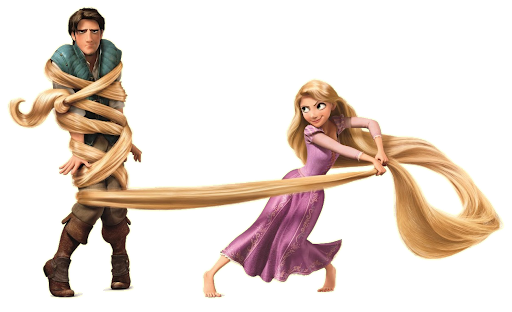

About Rapunzel
Rapunzel is a princess with very long hair. She is trapped in a tower with her an old lady (Moher Gothel) because she found her one day in he forrest and saw what magical power her hair had.
Flynn and Paula:3
Rapunzel's Characteristics
- She's got long hair
- She's pretty
- She has no manners
Rapunzel's friends
Rapunzel didn't have many friends because she was locked up in a tower. Although her best friend, has to be her chameleon pet Pascal. Click on the links below to read more about them: